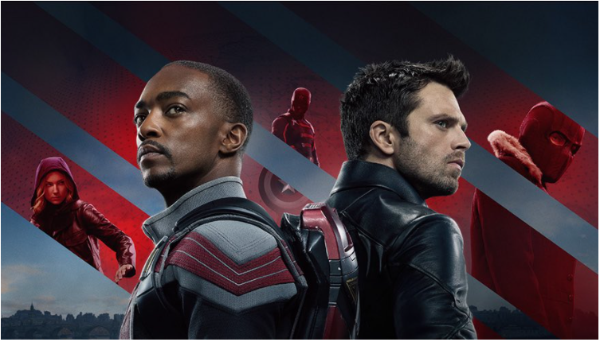

FALCÃO E O SOLDADO INVERNAL
Após receber o manto do Capitão América em "Vingadores: Endgame", Sam Wilson/Falcão (Anthony Mackie) luta para assumir o posto do herói. Ele se junta, então, a Bucky Barnes/Soldado Invernal (Sebastian Stan), embarcando numa aventura mundial que vai colocar à prova as habilidades dos dois.